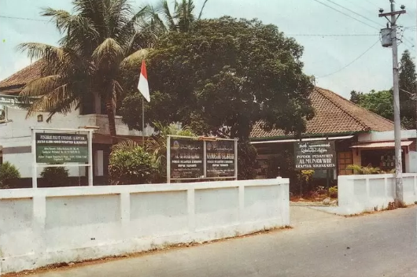

Informasi
Pondok Pesantren ini berada di Krapyak Kulon, Panggungharjo, Kec. Sewon, Kabupaten Bantul, Daerah Istimewa Yogyakarta 55188
Sejarah
Pondok Pesantren Al Munawwir didirikan oleh KH. Muhammad Munawwir bin Abdullah Rosyad pada tanggal 15 November 1911 M. Sejak awal berdirinya, pesantren ini semula bernama Pondok Pesantren Krapyak karena memang terletak di dusun Krapyak. Pada tahun 1976-an, nama pondok pesantren tersebut ditambah menjadi “Al-Munawwir” untuk mengenang pendirinya yaitu KH. M. Munawwir. Al-Qur’an menjadi ciri khas pendidikan pesantren ini sejak masa awal berdirinya.



Legenda
- Pondok Putra
- Pondok Putri
- Bangunan Umum